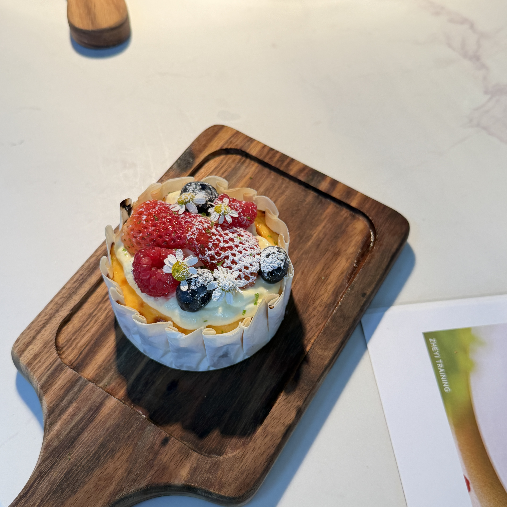
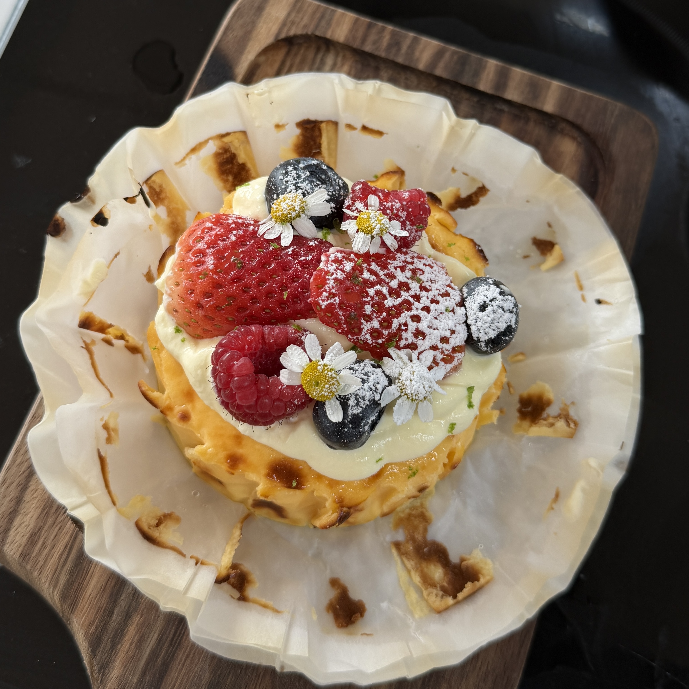

Basque Cheesecake
Creamy cheesecake with a caramelized top and soft center.
Ingredients
- Cream cheese (125g)
- Sugar (30g)
- Egg (1)
- Cream (65ml)
- Cornstarch (5g)
Directions
- Soften cream cheese.
- Mix with sugar until smooth.
- Add egg and combine.
- Pour in cream and mix.
- Add cornstarch.
- Pour into lined mold.
- Bake at 230°C for 15 minutes.
- Let cool before serving.